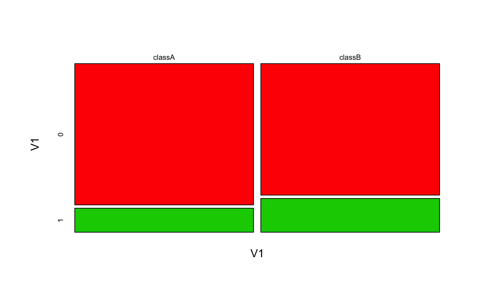

predict.bernoulli_naive_bayes.RdClassification based on the Bernoulli Naive Bayes model.
# S3 method for bernoulli_naive_bayes predict(object, newdata = NULL, type = c("class","prob"), ...)
| object | object of class inheriting from |
|---|---|
| newdata | matrix with numeric 0-1 predictors. |
| type | if "class", new data points are classified according to the highest posterior probabilities. If "prob", the posterior probabilities for each class are returned. |
| ... | not used. |
predict.bernoulli_naive_bayes returns either a factor with class labels corresponding to the maximal conditional posterior probabilities or a matrix with class label specific conditional posterior probabilities.
Computes conditional posterior probabilities for each class label using the Bayes' rule under the assumption of independence of predictors. If no new data is provided, the data from the object is used. Currently the predict.bernoulli_naive_bayes function does not handle missing values.
This is a specialized version of the Naive Bayes classifier, in which all features take on numeric 0-1 values and class conditional probabilities are modelled with the Bernoulli distribution.
The Bernoulli Naive Bayes is available in both, naive_bayes and bernoulli_naive_bayes and corresponding predict functions. The implementation of the specialized Naive Bayes proovides more efficient performance though. The speedup comes from the restricting the data input to a numeric 0-1 matrix and performing the linear algebra operations on it. In other words, the efficiency comes at cost of the flexibility.
The bernoulli_naive_bayes function is equivalent to the naive_bayes function when the numeric 0-1 matrix is coerced to, for instance, a 0-1 character matrix.
### Simulate the data: cols <- 10 ; rows <- 100 ; probs <- c("0" = 0.4, "1" = 0.1) M <- matrix(sample(0:1, rows * cols, TRUE, probs), nrow = rows, ncol = cols) y <- factor(sample(paste0("class", LETTERS[1:2]), rows, TRUE, prob = c(0.3,0.7))) colnames(M) <- paste0("V", seq_len(ncol(M))) laplace <- 0.5 ### Train the Bernoulli Naive Bayes bnb <- bernoulli_naive_bayes(x = M, y = y, laplace = laplace) head(predict(bnb, newdata = M, type = "prob"))#> classA classB #> [1,] 0.3454398 0.6545602 #> [2,] 0.2935339 0.7064661 #> [3,] 0.4983688 0.5016312 #> [4,] 0.4084851 0.5915149 #> [5,] 0.3857277 0.6142723 #> [6,] 0.2252869 0.7747131### Equivalent calculation with general naive_bayes function. ### (it is made sure that the columns are factors with the 0-1 levels) df <- as.data.frame(lapply(as.data.frame(M), factor, levels = c(0,1))) # sapply(df, class) nb <- naive_bayes(df, y, laplace = laplace) head(predict(nb, type = "prob"))#> classA classB #> [1,] 0.3454398 0.6545602 #> [2,] 0.2935339 0.7064661 #> [3,] 0.4983688 0.5016312 #> [4,] 0.4084851 0.5915149 #> [5,] 0.3857277 0.6142723 #> [6,] 0.2252869 0.7747131#> #> --------------------------------------------------------------------------------- #> ::: V1 (Bernoulli) #> --------------------------------------------------------------------------------- #> classA classB #> 0 0.8548387 0.7957746 #> 1 0.1451613 0.2042254 #> #> ---------------------------------------------------------------------------------#> #> --------------------------------------------------------------------------------- #> ::: V1 (Bernoulli) #> --------------------------------------------------------------------------------- #> #> V1 classA classB #> 0 0.8548387 0.7957746 #> 1 0.1451613 0.2042254 #> #> ---------------------------------------------------------------------------------# Check the equivalence of the class conditional distributions all(get_cond_dist(bnb) == get_cond_dist(nb))#> [1] TRUE#> classA:0 classA:1 classB:0 classB:1 #> V1 0.8548387 0.1451613 0.7957746 0.2042254 #> V2 0.7258065 0.2741935 0.7676056 0.2323944 #> V3 0.8225806 0.1774194 0.7535211 0.2464789 #> V4 0.8870968 0.1129032 0.8239437 0.1760563 #> V5 0.8225806 0.1774194 0.7957746 0.2042254 #> V6 0.9516129 0.0483871 0.8521127 0.1478873 #> V7 0.6935484 0.3064516 0.7816901 0.2183099 #> V8 0.8548387 0.1451613 0.7676056 0.2323944 #> V9 0.7580645 0.2419355 0.7676056 0.2323944 #> V10 0.7903226 0.2096774 0.7253521 0.2746479